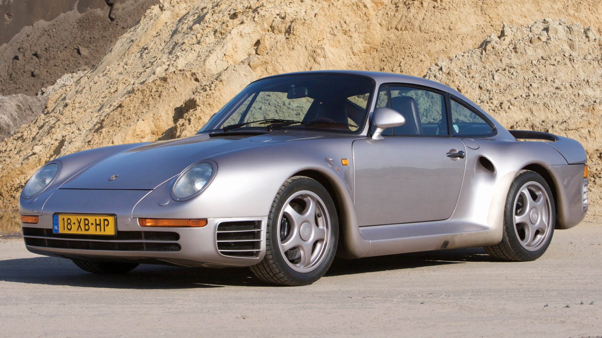

Em 1986, os engenheiros da Porsche chegaram perto da perfeição ao criar o 959, um modelo baseado no 911 e designado para competir no Grupo B de rally. Na época, era o carro mais tecnológico já criado e serviu de inspiração para os outros supercarros de outras marcas que tentaram chegar a seus pés, mas nunca conseguiram. Limitado a 292 unidades, o 959 unia a performance de um carro de corrida com o comforto de um carro de luxo e, nas palavras de vários jornalistas e entusiastas, o carro era perfeito. Com uma velocidade máxima de 320 km/h, o 959 superava e muito os concorrentes, que possuiam uma média de 275 km/h e, aliado a uma tração integral e sistemas que distribuissem o desempenho do motor para as rodas de maneira quase perfeita. Até hoje, o 959 é considerado como uma experiênca única de direção que ajudou a moldar os próximos supercarros a serem desenvolvidos, garantindo a ele o título de "avô dos supercarros".